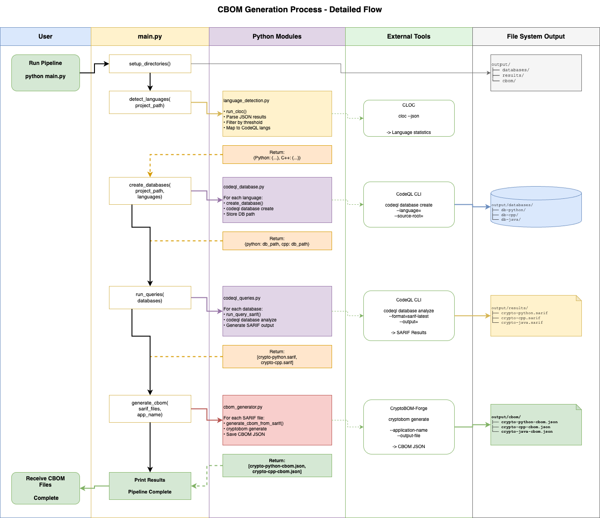
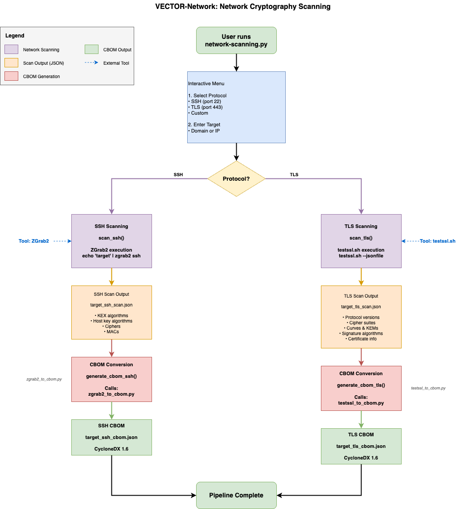

1.1 VECTOR runtime context ARC-001
Architecture design artifact
VECTOR operates as a Linux-based command-line toolchain that depends on a writable local workspace, external scanner binaries, and predictable output directories for generated artifacts.
Parent links: MRS-007 Run in a reproducible Linux-based environment
Child links: SWD-001 Entry points and directory initialization
| Attribute | Value |
|---|---|
| release | Alpha |
1.2 VECTOR-Code processing component ARC-002
Architecture design artifact
The VECTOR-Code component accepts a readable source-tree path, detects supported languages, creates CodeQL databases, runs inventory queries, and converts resulting findings into CBOM artifacts.
Processing pipeline

Parent links: MRS-004 Support source-code analysis for current target languages
Child links: SWD-002 Source inventory pipeline sequencing
| Attribute | Value |
|---|---|
| release | Alpha |
1.3 Unified inventory coverage boundary ARC-003
Architecture design artifact
VECTOR treats source-code analysis outputs and network-scan outputs as parallel inventory surfaces that are both transformed into persisted cryptographic inventory artifacts.
Parent links: MRS-001 Inventory cryptography across code and network surfaces
Child links: SWD-003 Inventory artifact segregation by analysis surface
| Attribute | Value |
|---|---|
| release | Alpha |
1.4 External analysis tool adapters ARC-004
Architecture design artifact
VECTOR delegates core analysis steps to external tools including cloc, CodeQL, cryptobom, testssl.sh, and zgrab2, and wraps them through thin orchestration scripts.
VECTOR-Network scanning workflow

Parent links: MRS-008 Orchestrate open-source analysis tooling
Child links: SWD-004 External command invocation contracts
| Attribute | Value |
|---|---|
| release | Alpha |
1.5 TLS assessment workflow ARC-005
Architecture design artifact
The TLS assessment workflow collects target-and-port input, invokes testssl.sh, stores a raw JSON result, and passes the result to the TLS-to-CBOM conversion path.
Parent links: MRS-005 Support TLS service assessment
Child links: SWD-005 TLS scan lifecycle and parser handoff
| Attribute | Value |
|---|---|
| release | Alpha |
1.6 SSH assessment workflow ARC-006
Architecture design artifact
The SSH assessment workflow collects target-and-port input, invokes zgrab2, stores a raw JSON result, and passes the result to the SSH-to-CBOM conversion path.
Parent links: MRS-006 Support SSH service assessment
Child links: SWD-006 SSH scan lifecycle and parser handoff
| Attribute | Value |
|---|---|
| release | Alpha |
1.7 CBOM generation and storage ARC-007
Architecture design artifact
CBOM generation is a distinct architecture concern that transforms intermediate findings into JSON inventory artifacts and stores them as reusable files in the local workspace.
Parent links: MRS-003 Produce standardized CBOM artifacts
Child links: SWD-007 CBOM generation routines
| Attribute | Value |
|---|---|
| release | Alpha |
1.8 Non-invasive network trust boundary ARC-008
Architecture design artifact
VECTOR's network workflows operate across a trust boundary from the local workstation to remote services and are constrained to observation-oriented scanner invocations and local artifact generation.
Parent links: MRS-009 Preserve non-invasive assessment behavior
Child links: SWD-008 Defensive validation and failure boundaries
| Attribute | Value |
|---|---|
| release | Alpha |
1.9 Algorithm modeling layer ARC-009
Architecture design artifact
VECTOR models cryptographic findings as explicit algorithm components so that classical, hybrid, and post-quantum-related elements can be represented consistently in generated CBOM outputs.
Parent links: MRS-002 Recognize post-quantum and hybrid algorithms
Child links: SWD-009 Algorithm decomposition and modeling
| Attribute | Value |
|---|---|
| release | Alpha |
1.10 Open artifact interfaces ARC-010
Architecture design artifact
VECTOR exposes its generated artifacts as local JSON files with stable naming conventions so they can be inspected and consumed by downstream tooling without proprietary dependencies.
Parent links: MRS-010 Produce open, reusable output artifacts
Child links: SWD-010 JSON interface and naming conventions
| Attribute | Value |
|---|---|
| release | Alpha |
1.11 VECTOR-Score: standalone quantum risk scoring module ARC-011
Architecture design artifact
VECTOR-Score is implemented as a standalone module under tor/VECTOR-Score/, positioned as a peer to VECTOR-Code and VECTOR-Network. It operates as a post-processing step on any CycloneDX CBOM JSON file, irrespective of the inventory tool that produced it.
Module boundaries
- Input: any CycloneDX CBOM JSON file (produced by VECTOR-Code, VECTOR-Network, or a conformant third-party tool).
- Output: an annotated CBOM JSON file and an optional Markdown risk report, written to configurable output paths.
- Dependencies: Python standard library only; no external packages required. Classification data is loaded from a co-located YAML catalog file at runtime.
Classification catalog
The risk classification rules are encoded in a YAML data file (data/algorithm-risk-catalog.yaml) rather than hardcoded in source. Each catalog entry specifies: algorithm name patterns (exact and/or regex), applicable primitive types, optional key-size bounds, risk classification, risk score, rationale, recommended migration target, and normative references. This design allows the catalog to be updated independently of the scoring logic as NIST, BSI TR-02102, and ANSSI guidance evolves.
Risk classification taxonomy
| Classification | Meaning |
|---|---|
quantum-vulnerable |
Broken by Shor's algorithm on a CRQC (RSA, DH, ECDH, ECDSA, DSA) |
quantum-weakened |
Security believed to be reduced by Grover's algorithm (e.g., AES-128, 3DES, SHA-1), but this is not accurate as the algorithm is not embarrassingly parallel and partitioning the search space would degrade the Grover quadratic speedup. This is subject to ongoing research. |
classically-deprecated |
Already deprecated by classical attacks (RC4, DES, MD5, NULL ciphers) |
quantum-safe |
Sufficient security margin against both classical and quantum attacks (AES-256, SHA-256/384/512) |
post-quantum |
Standardised PQC algorithm (ML-KEM, ML-DSA, SLH-DSA) |
hybrid |
Classical + PQC combination key exchange (X25519MLKEM768, SecP256r1MLKEM768) |
unknown |
Algorithm not matched by any catalog entry |
Integration approach
VECTOR-Score does not modify VECTOR-Code or VECTOR-Network. Users invoke it separately after obtaining a CBOM. Integration into pipelines is achieved by chaining command invocations.
Parent links: MRS-011 Assess quantum risk of discovered cryptographic assets
Child links: SWD-011 VECTOR-Score module decomposition and internal design
| Attribute | Value |
|---|---|
| release | Alpha |